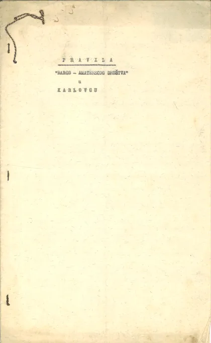
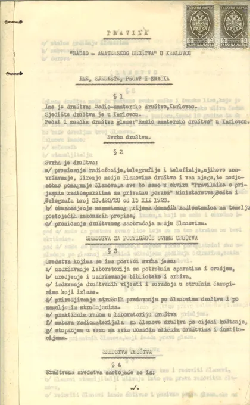
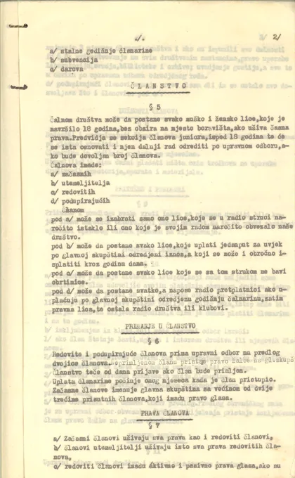
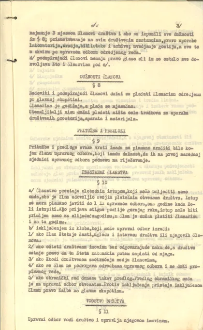
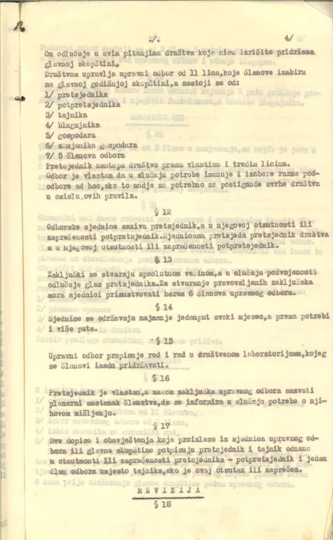
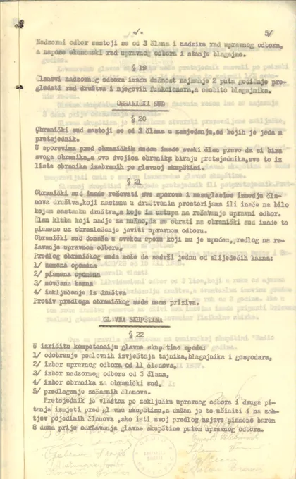
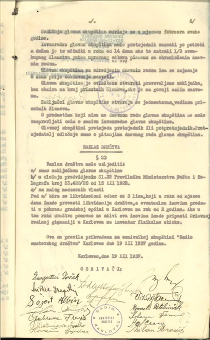
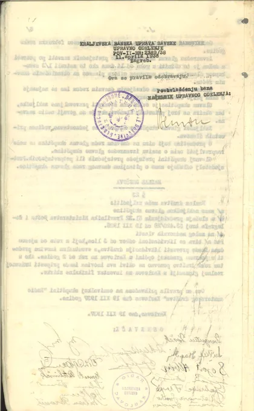
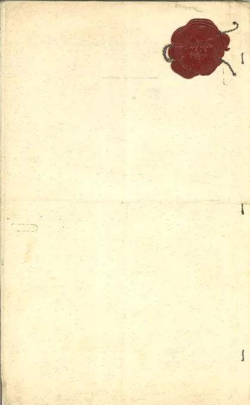
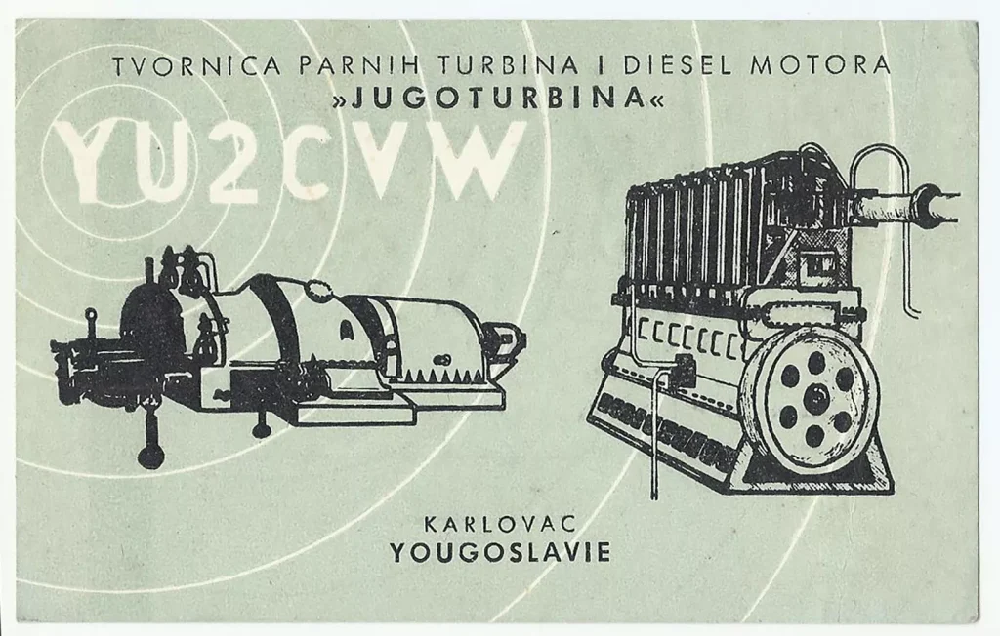

Povijest kluba
Povijest kluba
Pravila iz 1937.
Sačuvana pravila “Radio-amaterskog društva” u Karlovcu prihvaćena su na osnivačkoj skupštini 19. prosinca 1937. godine. Dokument potvrđuje početak organizirane radioamaterske djelatnosti u Karlovcu.


















Nakon ranijeg Radio-amaterskog društva osnovanog 1937. godine, poslijeratni Radioklub “Karlovac” počinje djelovati 1946. godine i djelovao je u Radićevoj ulici do 1948 godine kada prestaje s radom zbog loših uvjeta u kojima je djelovao. Formiranjem kluba Narodne tehnike 1952. godine pri tadašnjoj tvornici Edvard Kardelj (kasnije Jugoturbina) osnovana je sekcija radioamatera koja je radila pod nazivom “Turbina”. U toj sekciji je konstruiran i izrađen prvi kratkovalni predajnik kojim su ostvarene i prve veze. Godine 1954 sekcija dobiva status kluba, te prelazi u radioklub “Karlovac” i gdje se počinje prvi puta oglašavati pod pozivnim znakom YU2CVW.

Privremeni smještaj klub dobiva u hotelu gradskog radničkog naselja Švarča, nakon toga seli u podrumske prostorije narodne tehnike u istom hotelu do preseljenja u grad, u Gajevu ulicu.
Najveći doprinos ponovnom aktiviranju kluba dali su tadašnji predsjednik kluba ing. Ivan Taloš Vilko Taclik, Josip Grgić, Josip Draženović, prof. Branko Rusan, Mirko Đarmati, Josip Brozd i drugi zaljubljenici u radioamaterizam, koji su u to vrijeme prošli kroz klub. Godine 1955 došlo je do ideje da se u gradu Karlovcu napravi srednjevalna radiopostaja, koja je i izgrađena u rekordnom roku od 40 dana i poslala prvu emisiju u eter iz tadašnjih prostorija radiokluba na Švarči, odakle je program emitiran šest mjeseci do preseljenja u grad. Glavni konstruktor odašiljača bio je ing. Ivan Taloš. Nakon Gajeve ulice klub je djelovao i na Trgu braće Benić (danas M. Suflaya), Đ. Bijedića 4c (danas M. Krleže), a 1989. godine preseljen je u prostorije Centra za tehničku kulturu Karlovac (danas Zajednica tehničke kulture) M. Vrhovca 15, u naselju Grabriik gdje klub djeluje i danas i jedna je od članica Zajednice tehničke kulture.
Domovinski rat
Radioklub “Karlovac” ima posebne zasluge u Domovinskom ratu, ali o tome se danas vrlo malo zna i piše. Njegovi članovi među prvima su sudjelovali u organiziranju radiomreže između postrojbi na terenu. Mnoge aktivnosti bile su povezane i koordinirane, tako da je niz vrlo značajnih informacija preneseno i dobiveno putem ove mreže. Mnogi članovi otišli su u postrojbe Zbora narodne garde Narodne zaštite i Hrvarske vojske, organizirajući i radeći na prvim sustavima veza. Radioklub “Karlovac” dao je veći dio svoje opreme (uređaji, antene, pribor) na raspolaganje Hrvatskoj vojsci. Osim klupske opreme radioamateri koriste i svu svoju osobnu opremu i znanje za ostvarivanje što kvalitetnijh veza tijekom cijelog rata.
Ističe se i humanitarna aktivnost amatera u prenošenju poruka tisuća ugroženih ljudi.
Priznaje RH
Međunarodnim priznanjem Republike Hrvatske radioklub “Karlovac” počinje raditi pod novim pozivnim oznakama 9A1CVW i 9A1C (takmičarska) pod kojima i danas odašilje radiovalove po cijelom svijetu.


U poslijeratnom periodu nastavlja se aktivnost u klubu, čemu pridonosi i razvoj novih tehnologija komuniciranja. Članovi i klub opremaju se modernim kratkovalnim (KV) i ultrakratkovalnim (UKV) uređajima a svoju konstruktorsku djelatnost usmjeravaju na izradu dodatnih uređaja kao što su pretpojačala, transverteri, ispravljači, linearna pojačala, antene itd. Kvaliteta izrade tih uređaja nimalo ne zaostaje za tvorničkim a neka su se u radu pokazala i boljim.